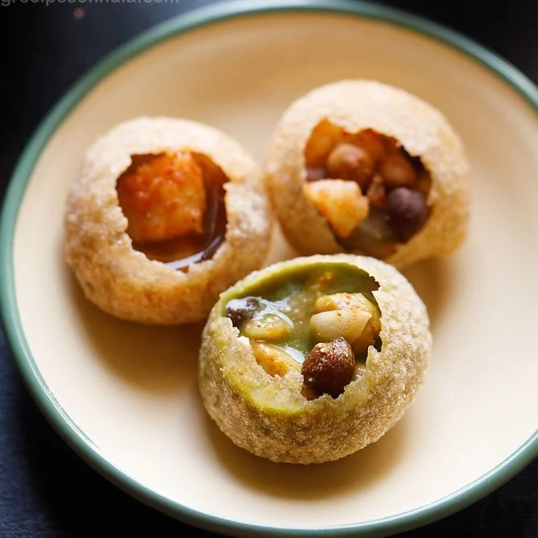

Golgappa Recipes

This is a pic I got of Golgappa from the internet.
My daughter Vishy is really really fond of them :)
Ingredients
- flour
- oil
- mint leaves
- peas
- potato
Steps
- Make green water
- Make aloo masala
- Fill the masala in the gol gappa
- And stuff it all in your mouth!!
Home